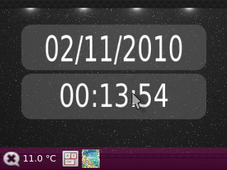
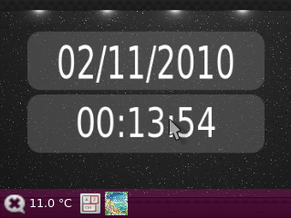
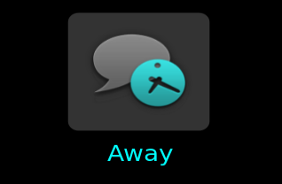
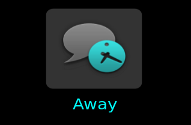

Plugins used for Music, Video and other media related functions.


| Models supported: | G15, G19 |
| Keys: | None supported |
| Download: | Part of main distribution. See here. |
| Other requirements: | Any media player that supports either MPRIS1 or
MPRIS2 DBus protocol. This currently includes :-
|
The plugin can handle multiple players at once, with one screen given to each. Details displayed include :-
If the Panel is available, the album art will also be added as an icon when playing (G19), or a small Play/Pause icon will be visible (G15).


| Models supported: | G15, G19 |
| Keys: | None supported |
| Download: | Part of main distribution. See here. |
| Other requirements: | ALSA audio system. |
Will popup a screen showing the current volume when the volume is changed. At present, this only works with the master mixer on the default device.
The screen will be displayed for 3 seconds after the last volume change event.
| Models supported: | G15, G19 |
| Keys: | None supported |
| Download: | Separate official Gnome15 plugin. See here. |
| Other requirements: | Pulse Audio. |
Based on the Impulse screenlet, this plugin will display a spectrum analyser to visualise any sound on the default device.
The analyser may either be allocated its own screen, it or may be configured to display in either the foreground or the background of every other screen.
The colours may be configured and two displays modes are available, one of which has animated falling peaks.
Note, this plugin is fairly CPU intensive. Improvements are slowly being made, but it probably as good as it is going to get until the underlying drivers and how Gnome15 communicates with them is changed.
Plugins that change the way Gnome15 looks or acts.
 

| Models supported: | G15, G19 |
| Keys: | None supported |
| Download: | Part of main distribution. See here. |
| Other requirements: | None |
Reserves an area of the screen that may be used as an area for other plugins to place permanently visible information. There are two modes depending on the device being used.
Due to the restricted nature of this display, the panel always occupies the upper right corner of the display, and grows towards the center.
Plugins are allocated a 6 pixel high area to be able to add small icons. Not all of the plugins will support this display (indicator me for example currently doesn't).
Panel preferences have no effect in this mode.
May reserve any edge of the screen, top, bottom, left or right. The panel size is configurable, as its background colour and opacity.
Because the space available for content will decrease, the content will be resized maintaing aspect ratio. This means you will end up with an amount unusable space on every screen. Stretch Content may be set to make the content area take all available space.
| Models supported: | G15, G19 |
| Keys: | None supported |
| Download: | Part of main distribution. See here. |
| Other requirements: | None |
Adds transition effects when switching between screens.
| Models supported: | G19, G15 (see below) |
| Keys: | None supported |
| Download: | Part of main distribution. See here. |
| Other requirements: | None |
Simply draws an images as the background of every screen. Supports all image formats supported by GTK.
While this works on the G15, you are unlikely to get a satisfactory effect with it.
Plugins that for all things personal to you and your communication with others.
 

| Models supported: | G19, G15 (see below) |
| Keys: | None supported |
| Download: | Part of main distribution. See here. |
| Other requirements: | None |
Will popup a high priority screen when you presence changes (i.e. Away, Offline, Available etc). A permanent icon will also be added to the Panel when it is enabled (G19) indicating current status.
This plugin may be expanded in the future to mimic more functions of the desktop Indicator Me applet, such as changing status and allowing lanching of other applications such as Ubuntu One.
| Models supported: | G19, G15 (see below) |
| Keys: | G19 - Up, Down, Ok G15 - L3 (Up), L4 (Down), L5 (Ok) |
| Download: | Part of main distribution. See here. |
| Other requirements: | None |
Intended for use on systems that do no support the Indicator Messages plugin as an alternative to showing your current email status.
This plugin provides a screen showing the number of unread emails for each of the configured accounts. This is presented as a menu that may be navigated using the keyboard's special keys. Note, currently selecting an item simply opens the default email client. It does not select the highlighted account..
The POP3 and IMAP protocols may be used, with SSL support for both. Passwords are stored in the Gnome Keyring, so you will be may be prompted to unlock it. Upon the first connection, you will then be prompted for the email account password, which will then be stored in the keyring if correct.
The plugin also adds an icon to the Panel if available, showing the current Attention status. If there is an unread message, the icon will change color (G19), or appear (G15).
| Models supported: | G19, G15 (see below) |
| Keys: | G19 - Up, Down, Ok G15 - L3 (Up), L4 (Down), L5 (Ok) |
| Download: | Part of main distribution. See here. |
| Other requirements: | Distribution that uses the Indicator system, i.e. Ubuntu 10.4 or above. |
Provides an alternative to the default Messaging Menu functionality of Ubuntu 10.4 and above. From launchpad summary :-
A place on the user's desktop that collects messages that need a response. This menu provides a condenced and collected view of all of those messages for quick access, but without making them annoying in times that you want to ignore them.
This feature is made use of by a number of applications including Gwibber, Evolution, Empathy, Popper Email Notification and others. Anything that might produce messages for you to read.
This plugin provides a screen with a menu that may be navigated using the keyboard's special keys. Selecting an item will perform the action specified by the application that created the item, opening a chat window for example.
When a new message is received, the plugin will temporarily raise this screen to high priority and automatically scroll to and select the newly arrived item.
The plugin also adds an icon to the Panel if available, showing the current Attention status. If there is an unread message, the icon will change color (G19), or appear (G15).